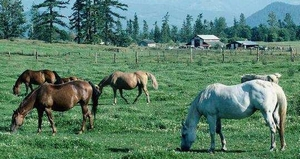
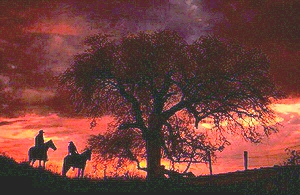
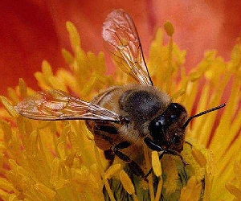

Horsemanship Pages
- *Home
- *Sitemap
- *SEARCH THE SITE
- *Horse History
- *Horseman Tips
- *Horsemanship
- *Amazing Horse Hoof
- *Horse Anatomy Pictures
- *Rope Halters
- My Random Horse Thoughts
- *Tying A Horse
- *Bosal/Hackamores
- *Bad Horsemanship
- *Misc Horse Info
- *Trailer Loading
- *Training Videos
- *Hobbles
- *Horse Articles
- *Health and Medical Info
- Horse & Rider Fear
- Opposition Reflex
- *Answers to Questions
- *Cowboy Wisdom
- *Cookie Recipe for Horses
- *Horse Jokes
- *Cowboy Weather
- *Sites and Links
- *A Horse's Prayer*
- *Photos Rick and Horses
- *Clinics on Request*
- *Contact Rick
Think Like A Horse - Natural Horsemanship
Rick Gore Horsemanship

Horses love it when their owners understand them.
Horsemanship is about the horse teaching you about yourself.
Cowboy Weather:
Weather: the condition of the atmosphere at a particular place and time. Weather proverbs and sayings have been passed from generation to generation. People who make their living outdoors, like farmers, sailors and cattlemen, depend on predicting weather for their livelihood. Before Doppler radar, TV and computers, these people had become fairly proficient at predicting the weather. Today this is handy for trail rides, picnics, weddings or other outdoor activities. The following sayings and quotes can fairly predict weather for the next 12 to 24 hours.
"Tails pointing west, weather's the best.
"Tails pointing east, weather's the least."
Horses and cattle usually graze facing downwind so they can smell any predator upwind of them and keep an eye open for anything approaching from downwind. A strong east wind indicates the approach of wet weather. A west wind, on the other hand, means fair weather.
"When the rooster goes crowing to bed, he will rise with a watery head."
As the sky darkens from an approaching storm front, chickens and other birds begin to hunker down... roosting, as if for the night. A rooster will crow as an alert message to the rest of the flock -- to awaken in the morning, or to head for shelter when danger approaches. The calls of many birds, including crows and geese, have been known to be more frequent with falling pressure.

"Red sky at night is sailor's delight. Red sky at morning is a Sailor's warning" -- Red sunset normally means good weather, red sunrise generally means rain.
"A sunny shower won't last an hour."
"Birds fly higher in fair weather than foul." This is why duck hunters dislike blue skies. This may also be related to the fact that thinner low-pressure air makes flying more difficult for birds, so they tend to roost before a storm. High-pressure air, on the other hand brings good weather and allows birds to fly higher, where they can take advantage of more favorable winds.
Many springs that have gone dry will have a good flow of water before rain. High pressure air may reduce the flow of water from a spring, while the reduced resistance of a low pressure system will allow the water to flow more freely.
"When swamps smell, sit home a spell. "Low pressure preceding a storm allows more odors to escape from swamps, ditches, sewers, etc. If the air suddenly smells foul, it often means that the weather will turn foul as well. A similar saying is: "When ditches and ponds offend the nose, look for rain and stormy blows." Likewise, the low pressure before a storm causes your body to release more insect-attracting odors; thus: "Flies bite before a flight." When insects become increasingly troublesome it may signal the approach of bad weather.
"When the night has a fever, it cries in the morning."
"Moonlit nights have the heaviest frosts." A clear sky allows more heat to escape from the earth's surface, causing colder temperatures."
"When bees stay close to the hive, rain is near by."
"Morning dry, rain is high -- Morning wet, no rain yet. "A heavy dew in the morning indicates fair weather.
"A summer fog for fair, A winter fog for rain"
"When the dew is on the grass, Rain will never come to pass. When grass is dry at morning light, look for rain before the night."
"If a cat washes her face or her ear, tis a sign the weather will be fine and clear." -- Cat fur can build up static electric charges when it gets very dry. During times of low humidity and fair weather, especially in the wintertime when it is very dry, a cat may lick its fur. In order to moisten it. Moist fur will shed electric charge and prevent static discharges, which annoy the cat.
"If a circle forms around the moon, it will rain soon." The circle that forms around the sun or moon is called a halo. The light from the sun or moon refracting (bending) as they pass through the ice crystals that form high-level cirrus and cirrostratus clouds forms halos. These clouds do not produce rain or snow, but they often precede an advancing low pressure system which may bring bad weather.
"Rainbow in the morning, Shepherds take warning -- Rainbow at night, Shepherd's delight." A rainbow in the morning is formed when light from the rising sun in the east strikes and refracts through the water droplets in a rain cloud in the western sky. Rainbows always occur in the part of the sky opposite the sun. Since most storms (though not all) come out of the west, a rainbow in the western sky is a sign of rain. A rainbow in the eastern sky, as would occur in the evening, is a sign the rain has passed.
"When clouds look like black smoke -- A wise man will put on his coat. "Thick clouds laden with large droplets of water look darker than the fair-weather cumulus clouds"
"When leaves turn their back it's a sign it's going to rain. "Some trees, such as oak and maple, have leaves that will curl when the humidity is very high and the wind is blowing strongly. Both these conditions indicate an approaching storm.
Weather systems usually move from west to east. A reddish evening sky can be caused by sunlight shining through dry dust particles in the western sky. This dry sky may move overhead by morning. If the morning is gray in the east, it means the clouds have already passed you.
"Evening red and morning gray, Two sure signs of one fine day." "Evening red and weather fine -- Morning red, of rain's a sign." "An evening gray and a morning red -- Will send the shepherd wet to bed."
"When clouds appear like rocks and towers, The earth will be washed by frequent showers." -- Towering clouds, lofted high by strong updrafts, are cumulonimbus clouds. These thunderstorm clouds produce heavy showers, wind, and lightning. They are not, however, associated with steady rain.
"I know ladies by the score, whose hair foretells the storm; Long before it begins to pour, their curls take a drooping form." -- Human hair especially blonde hair has a tendency to expand in length as the humidity rises. This may cause naturally curly hair to droop or it may cause straight hair to curl up a little. The higher the humidity, the more likely it is to rain.
"When chairs squeak, It's about rain they speak." -- Wooden Chairs will absorb moisture from the air when the humidity rises. This causes them to squeak
"Cold is the night -- When the stars shine bright." -- The more moisture there is in the sky, the more the light from the sun, moon, and stars is dimmed or reddened. A very clear sky permits more starlight to penetrate, thus the stars appear brighter. Moisture tends to hold in the day's heat, like a blanket. The less moisture there is in the air at night, the more the temperature tends to fall. Thus, the brighter the stars appear, the cooler is the night.
"When the wind is out of the east, "It's neither good for man nor beast."
"Fish bite least, With wind in the East."
"When the ditch and pond affect the nose, Look out for rain and stormy blows."
"If birds fly low -- Expect rain and a blow."
"If the rooster crows on going to bed -- You may rise with a watery head." -- It is thought that birds, and other animals, react negatively to a decrease in atmospheric pressure; it makes them restless. A restless rooster tends to crow more.
If clouds move against the wind, rain will follow.
"A wind in the south, has rain in her mouth."
"When cattle lie down during a light rain, it will pass soon."
When the sky is red in the morning, And sounds travel far at night - When fish jump high from the water, And flies stick tight and bite -- When you can't get salt from your shaker, And your bones gives extra pain -- There's no need to consult an almanac, You just know it's going to rain.
"Rainbow in the morning gives you fair warning." In the morning, when the sun is in the east, the shower and it's rainbow are in the west. As the weather in the mid-latitudes of the northern hemisphere moves mostly from the west to east, the morning rainbow indicates that rain is moving from the west toward the observer.